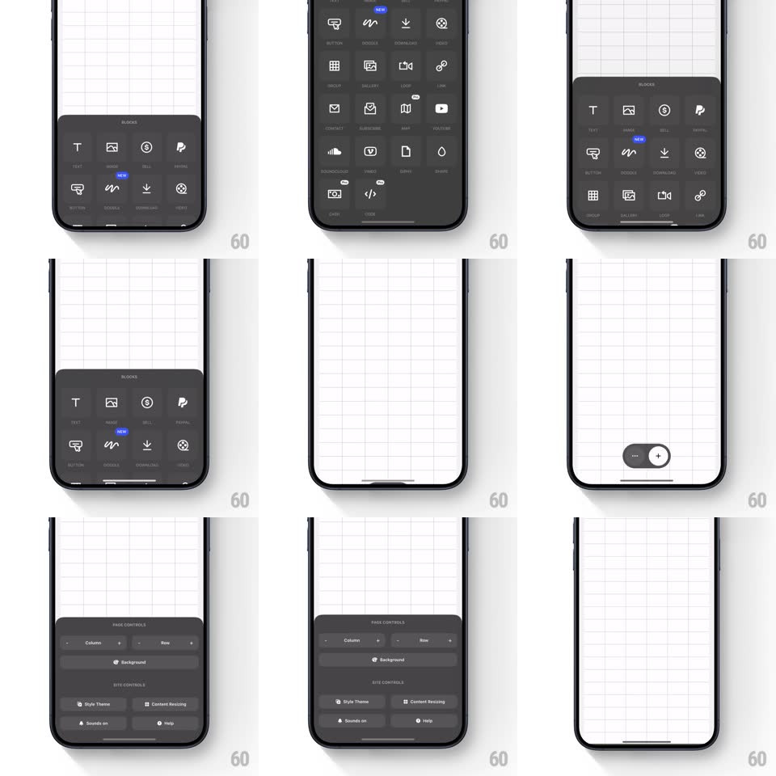

Media
Frame-by-frame

Rebuild this interaction 1:1: Universe's block-picker sheet - on the grid canvas, a floating pill toggles between "..." and "+"; tapping + springs up a dark BLOCKS sheet (icon grid of block types with NEW badges), and a PAGE CONTROLS variant offers column steppers, Background, and site-control buttons.

Rebuild this interaction 1:1: Universe's block-picker sheet - on the grid canvas, a floating pill toggles between "..." and "+"; tapping + springs up a dark BLOCKS sheet (icon grid of block types with NEW badges), and a PAGE CONTROLS variant offers column steppers, Background, and site-control buttons.
## Integration
Integration: stack-agnostic spec - springs given as stiffness/damping, timed motions as duration + curve; map every value to your framework and animation library of choice.
## Scene
White grid canvas with a floating dark pill at bottom-center ("..." / "+"). BLOCKS sheet: dark rounded panel, "BLOCKS" title, icon grid (Text, Image, Button, Social, Contact, Gallery, Video, Map, Music...), some icons badged NEW. PAGE CONTROLS sheet: "Column" and "Row" steppers, "Background" row, and four site buttons (Style Theme, Content Resizing, Sounds, Help).
## Motion spec
Pattern: morphing pill-to-sheet.
- Tap the pill's +: the pill expands upward and outward into the sheet (width + height grow, corner radius 24 -> 20, spring ~300/24, ~400ms) while its content crossfades to the BLOCKS grid (200ms, icons staggering in 25ms per row).
- Drag the sheet's top edge: it tracks the finger to a taller detent showing more grid rows (spring snap between detents, ~320/26).
- Tap a block icon: the icon flashes (opacity 0.5 -> 1, 120ms), the sheet collapses back to the pill (reverse morph), and the new block drops onto the canvas from the sheet's position (translate + scale 0.8 -> 1, spring ~300/22).
- Tapping "..." morphs the pill to the PAGE CONTROLS sheet instead - same expansion, different content; steppers tick with haptics.
- Tap outside or swipe down: the sheet springs back to the pill.
## Calibration
- One floating control owns both sheets - the pill is the persistent anchor everything morphs from/to.
- The canvas stays interactive and visible above the sheet; the grid dims ~10% when a sheet is open.
## Reduced motion
Sheets fade/slide up without the pill morph.
## Don't miss
- NEW badges are small blue labels on specific block icons.
- The pill's two glyphs ("..." and "+") are both visible at rest - it is a split control, not a single button.